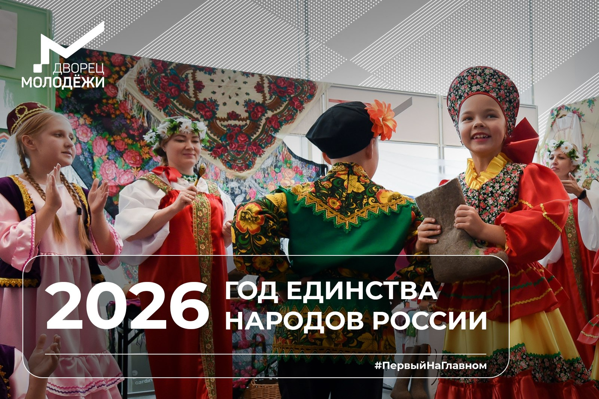
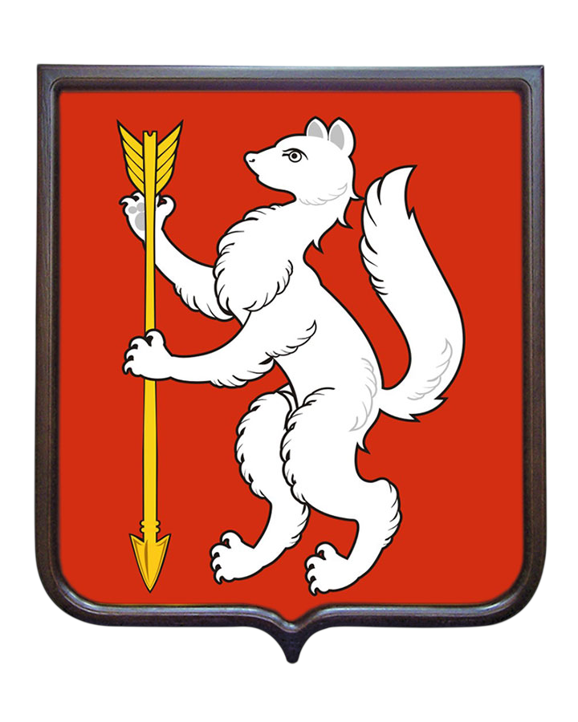

Инициатива, ранее предложенная атаманом Всероссийского казачьего общества Виталием Кузнецовым на заседании Совета по межнациональным отношениям, получила высший статус и определит общегосударственную повестку.По данным РосстатаФедеральная служба государственной статистики (на начало 2025 года) численность населения Российской Федерации составляет 146,1 млн. человек. Национальный состав населения России характеризуется следующим соотношением: русские составляют около 80% от общего числа жителей страны; представители других национальностей — примерно 20% населения.
Россия — многонациональное государство, на территории которого проживает более 190 этнических группЭтническая группа — историческая общность людей с общим языком, культурой и самосознанием.. Разнообразие этносов объясняется огромной территорией, различными климатическими зонами и историческим пересечением торговых и миграционных путей. Большая часть народов России — коренные, которые издавна населяли территорию страны и проживают на ней постоянно (русские, татары, башкиры и др.).
Представители этнических групп России говорят на языках разных языковых семей:
| № | Народность | В том числе | Численность чел. | % от всего населения | % от указавших национальность |
|---|---|---|---|---|---|
| 1 | Русские | казаки, поморы | 105 579 179 | 71,73 % | 80,85 % |
| 2 | Татары | кряшены, мишари, сибирские татары, астраханские татары | 4 713 669 | 3,20 % | 3,61 % |
| 3 | Чеченцы | чеченцы-аккинцы | 1 674 854 | 1,14 % | 1,28 % |
| 4 | Башкиры | — | 1 571 879 | 1,07 % | 1,20 % |
| 5 | Чуваши | — | 1 067 139 | 0,73 % | 0,82 % |
| 6 | Аварцы | андийцы, дидойцы (цезы) и другие андо-цезские народности и арчинцы | 1 012 074 | 0,69 % | 0,78 % |
| 7 | Армяне | черкесогаи | 946 172 | 0,64 % | 0,72 % |
| 8 | Украинцы | — | 884 007 | 0,60 % | 0,68 % |
| 9 | Даргинцы | кайтагцы, кубачинцы | 626 601 | 0,43 % | 0,48 % |
| 10 | Казахи | — | 591 970 | 0,40 % | 0,45 % |
| … | Итого, указавшие национальную принадлежность | — | 130 587 364 | 88,73 % | 100,00 % |
| … | Лица, в переписных листах которых национальная принадлежность не указана | — | 16 594 759 | 11,27 % | — |
| … | Всего в РФ | — | 147 182 123 | 100,00 % | — |